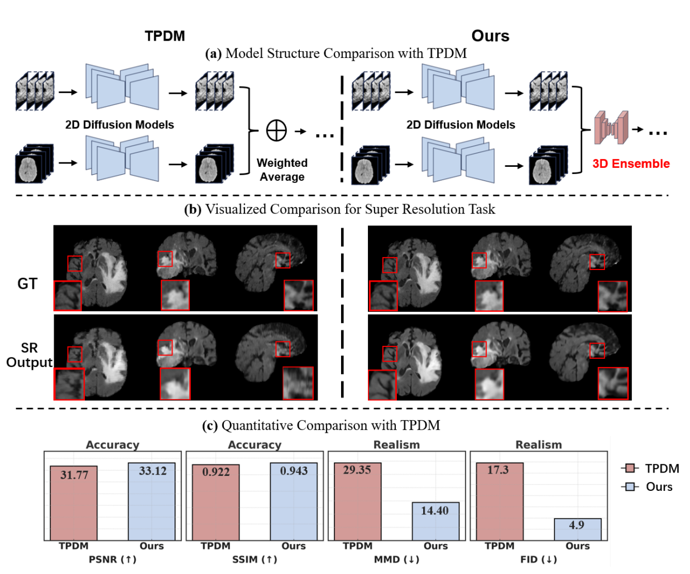
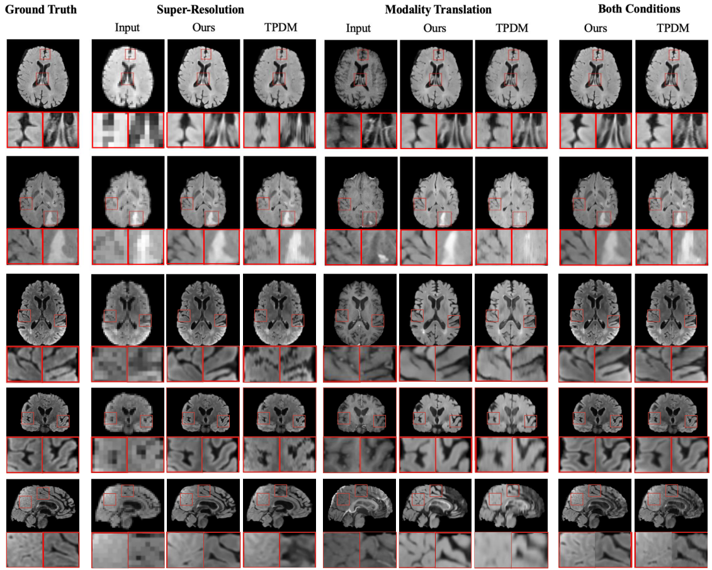
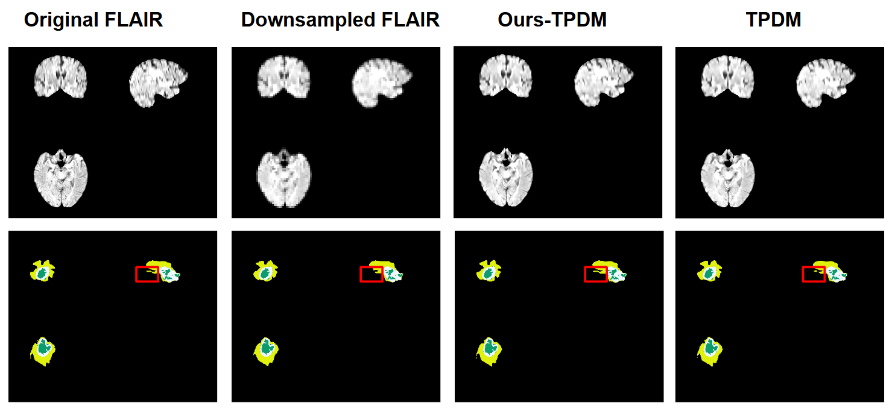
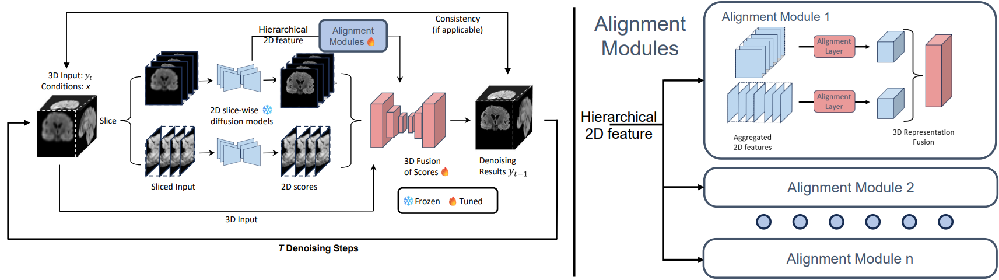
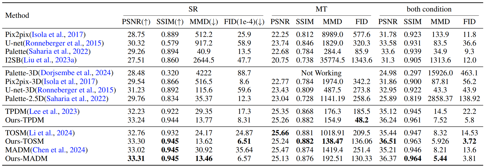

- Xiyue Zhu1
- Dou Hoon Kwark1
- Ruike Zhu1
- Kaiwen Hong1
- Yiqi Tao1
- Shirui Luo2
- Yudu Li1
- Zhi-Pei Liang1
- Volodymyr Kindratenko12
- 1University of Illinois at Urbana-Champaign
- 2National Center for Supercomputing Applications

Abstract
In volume-to-volume translations in medical images,
existing models often struggle to capture the inherent volumetric distribution using 3D voxel-space representations, due to high computational dataset demands. We present Score-Fusion,
a novel volumetric translation model that effectively learns 3D representations by ensembling perpendicularly trained 2D diffusion models in score function space.
By carefully initializing our model to start with an average of 2D models as in existing models, we reduce 3D training to a fine-tuning process, mitigating computational and data demands.
Furthermore, we explicitly design the 3D model's hierarchical layers to learn ensembles of 2D features, further enhancing efficiency and performance.
Moreover, Score-Fusion naturally extends to multi-modality settings by fusing diffusion models conditioned on different inputs for flexible, accurate integration.
We demonstrate that 3D representation is essential for better performance in downstream recognition tasks, such as tumor segmentation, where most segmentation models are based on 3D representation.
Extensive experiments demonstrate that Score-Fusion achieves superior accuracy and volumetric fidelity in 3D medical image super-resolution and modality translation. Additionally, we extend Score-Fusion to video super-resolution by integrating 2D diffusion models on time-space slices with a spatial-temporal video diffusion backbone, highlighting its potential for general-purpose volume translation and providing broader insight into learning-based approaches for score function fusion.
Extensive experiments demonstrate that Score-Fusion achieves superior accuracy and volumetric fidelity in 3D medical image super-resolution and modality translation. Additionally, we extend Score-Fusion to video super-resolution by integrating 2D diffusion models on time-space slices with a spatial-temporal video diffusion backbone, highlighting its potential for general-purpose volume translation and providing broader insight into learning-based approaches for score function fusion.
Quantitative Results
Visual comparison of generated samples for three different conditions. The first three rows show axial view slices
from different MRI volumes. Neither Score-Fusion nor TPDM have a 2D model trained in this direction. The last three rows
show slices for the same MRI volume in all three views. Score-Fusion reconstructs more realistic details with smoother
edges and fewer artifacts.

Downstream Task
Our method can enhance performance in downstream tasks. This is because a vast majority of the models in downstream tasks uses 3D representations, such as 3D convolution and 3D swin transformers.
Our model introduces a novel way to leverage these 3D representations, improving the performance. We evaluate our model's results on tumor segmentation.

Score Fusion for medical image volume-to-volume translation
Overview of the Score-Fusion. At each denoising step, two pre-trained 2D models provide initial estimations of
the scores in a slice-wise manner. Subsequently, a 3D network learns to integrate these estimations via 3D representation
extracted from 3D input and aggregated 2D scores. In addition, the 3D model is initialized to output an average of 2D scores.
Moreover, The 3D network layers are also reformulated to learn an ensemble of aggregated and aligned 2D features. These
designs accelerate and stabilize the 3D training process.

Quantitative Results
Quantitative evaluation of Score-Fusion on BraTS dataset. Best metrics are highlighted in bold. The proposed
model achieves better accuracy (PSNR/SSIM) given more 3D context than their corresponding variant in most tasks.
Moreover, thanks to 3D representation, Score-Fusion achieves significantly better 3D realism (MMD/FID).
